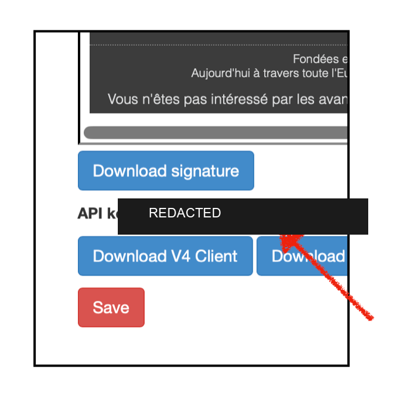
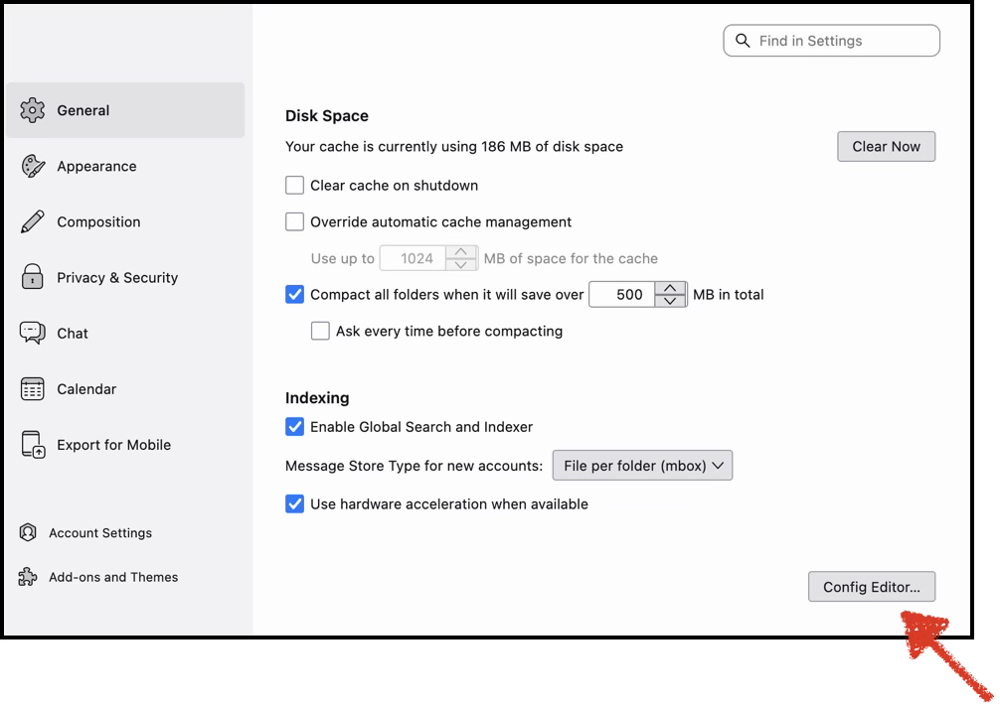
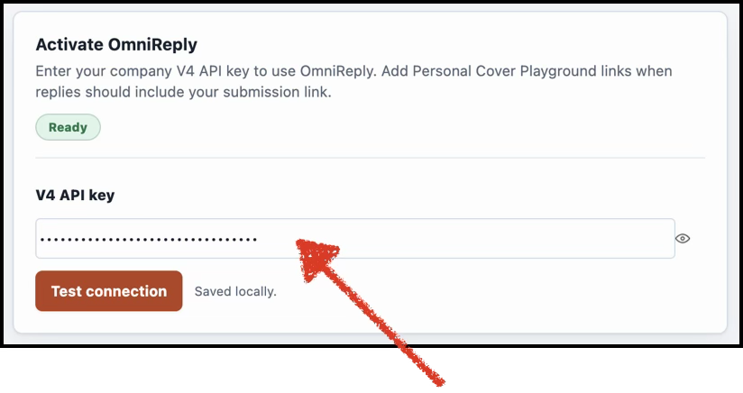
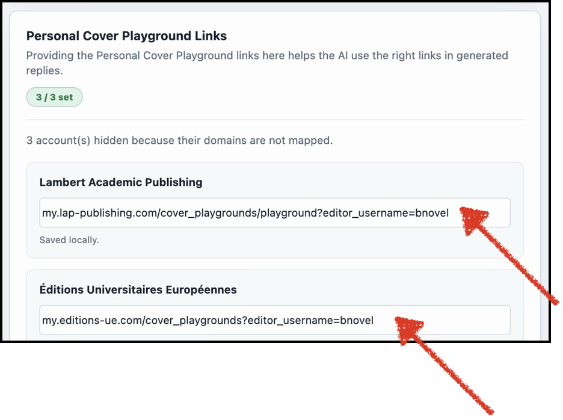

Download the extension file
Click Download OmniReply. Keep the downloaded XPI file available for the install step.
Thunderbird extension
A quick setup guide for editors. Download the extension, install it in Thunderbird, then connect it with your V4 API key and Cover Playground link.
Internal build: only install this XPI if you received this page from OmniScriptum. The download button always points to the newest published package.
Click Download OmniReply. Keep the downloaded XPI file available for the install step.
Open v4.vdm-vsg.de, go to Account, and copy the API key below your signatures.



xpinstall.signatures.required.Only change this setting for the internal OmniReply XPI installation. Do not install add-ons from unknown sources.


Open OmniReply settings, paste your V4 API key, and click Test connection. The status should show Ready.

Paste your personal Cover Playground link for each recognized imprint account. OmniReply uses these links when a reply should include your submission link.

Open an email in Thunderbird and click OmniReply. Read the generated answer before using it, especially when the reply contains links, names, prices, or imprint-specific information.